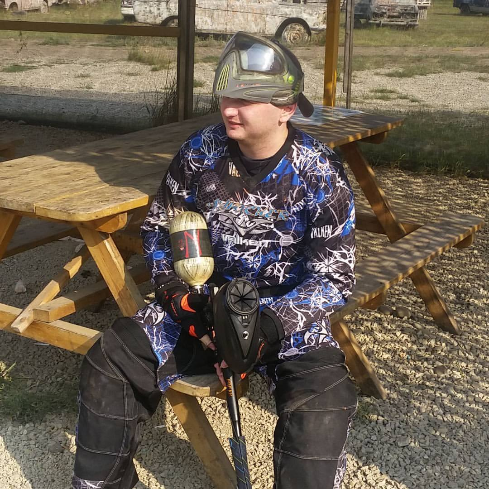

Резюме
Пендюр Роман
Контакты
+ 38 (099) 401 025
Snowcatworld@gmail.com
Skype: snowcatworld
Социальные сети
Facebook
Instagram>
О себе
Общительный и тактичный в общении, инициативный,
ответственный и старательный в работе, аккуратный и пунктуальный,
ориентированность на клиента. Умею самостоятельно принимать решения.
Языки программирования/ Технологии / Инструменты / Методологии
- Agile, SCRUM
- Kanban
- Waterfall
- Jira
- SQL
- Javascript (beginner, Softserv IT academy Certificate, JUNGLE COURSES - JUNGLE JavaScript)
- Java (beginner)
Опыт работы инженера по технологиям Wi-Fi
- Прокладка и настройка проводных и беспроводных Интернет-сетей
- Настройка и обслуживание интернет оборудования
- Устранение неполадок в сети Интернет
- Планирование и оптимизация интернет-коммуникаций
- Управление командой в количестве 2 человек
Учебные курсы
- Javarush (in progress)
- Head First Java
- JavaScript Fundamentals (Softserve IT Academy)
- JUNGLE COURSES - JUNGLE JavaScript
Образование
- Магистр - Черновицкий национальный университет имени Юрия Федьковича по специальности Филология.
- Специалист - Национальный университет «Одесская юридическая академия» по специальности «Правоведение».
Языки
- Украинский: Родной
- Русский: свободное общение
- Английский: уровень Intermediate Low
Английская версия.
Кликни по мне